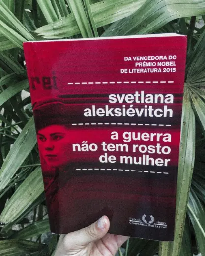

Resenha literária.
“A guerra não tem rosto de mulher” é um livro da autora Svetlana Aleksiévitch, lançado no Brasil em 2016 pela editora Companhia das Letras e ganhador do Prêmio Nobel de Literatura em 2015.
A história das guerras costuma ser contada sob a partir do ponto de vista masculino: soldados e generais, algozes e libertadores. Trata-se, porém, de um equívoco e uma injustiça que merece revisão histórica. Se de fato em muitos conflitos as mulheres ficaram na retaguarda - condição essencial, aliás- , em outros elas efetivamente foram à luta.

Introdução
Para adentrar sobre o livro “A guerra não tem rosto de mulher”, saber um pouco sobre a história da escritora, Svetlana Aleksiévitch, acrescenta um toque especial ao decorrer da leitura, sendo uma ótima introdução ao livro.
A autora, jornalista e escritora ucraniana, cresceu em uma vila onde quase todos os homens haviam morrido na guerra. Ali a população era formada majoritariamente de mulheres, que relatavam um lado da história muito diferente das tradicionalmente contadas.
Ao se deparar com livros sobre a guerra no qual retratavam apenas a visão masculina, a autora começa sua busca por outra narrativa, como aquela na qual cresceu ouvindo. Uma história com nuances que somente as mulheres conseguiam compartilhar.
O livro contém entrevistas realizadas durante anos com diversas mulheres que estiveram nas mais variadas posições na guerra; desde fuzileiras, médicas e enfermeiras, integrantes dos partisans, mensageiras, sobreviventes das cidades e mais.
A autora nos conta como foi a busca e recepção dessas essas mulheres, a vergonha que muitas tinham de contar esse lado de sua história para as filhas, como as histórias mudavam conforme estavam sozinhas ou com os maridos; a dor, o choro e o impacto dessa experiência na vida delas.
As transcrições das entrevistas são feitas da forma mais fiel e sensível possível, sendo algumas vezes acrescentadas descrições do que estava acontecendo no momento da entrevista (choro, risada, uma pergunta informal, etc.).
O livro
Ele é dividido de forma a sermos guiados durante o início, meio e fim da guerra, podendo acompanhar diversas visões sobre estes momentos. Contendo assuntos conectados, como as histórias das enfermeiras e da presença das mulheres soldadas no front.
Podemos conhecer a história daquelas que sentiam a descrença de uma guerra longa; da fé que tinham na pátria; o patriotismo de jovens (14/16 anos) se alistando e querendo ajudar fervorosamente; mulheres se despedindo dos homens que iriam servir no front; as experiências vividas nos centros de saúde; das mortes que presenciaram; da rotina no campo de frente; do medo até o momento da vitória.
No início de cada história podemos conhecer o nome (algumas vezes fictícios), a idade que tinha na guerra e seu ofício. Esse pequeno detalhe muitas vezes acrescenta um outro toque a história.
A guerra “feminina” tem suas próprias cores, cheiros, sua iluminação e seu espaço sentimental. suas próprias palavras. Nela, não há heróis nem façanhas incríveis, há apenas pessoas ocupadas com uma tarefa desumanamente humana. E ali não sofrem apenas elas (as pessoas!), mas também a terra, os pássaros, as arvores. Todos os que vivem conosco na terra. Sofrem sem palavras, o que é ainda mais terrível.
Essas histórias são alguns dos piores socos que alguém poderia levar. É possível encontrar mulheres heroicas, daquelas que perderam tudo ou que a muito custo conseguiram salvar pouco; das diversas ocupações que tiveram, mesmo com as adversidades; das diversas mortes que encararam e de seus sacrifícios pessoais para a sobrevivência.
Ao adentrar o livro entendemos o que a autora estava querendo transmitir a respeito da narrativa e olhar feminino sob as brutalidades da guerra. Nós conhecemos o antes, mas também podemos entender como foi o depois.
São histórias de patriotas que deram tudo e após a vitória ainda tiveram que encarar o machismo daqueles que não as viam com bons olhos por terem lutado na guerra.
“A guerra não tem rosto de mulher” é um livro sobre o quão intrínseco o ser humano pode ser, o quanto se pode oferecer muito mesmo quando não se tem nada, sobre como apesar da vitória não tem sentido festejar em cima de tanto luto, além é claro, da força daquelas que não são tidas como heroínas nos livros de histórias e que para ser mais clara, não são nem mesmo reconhecidas.
A construção do livro, com a introdução pessoal da autora e os relatos variados acompanhando o trajeto da guerra, proporciona um sentimento de imersão na história no qual é possível gerar empatia, como também é tirar conhecimentos sobre a sociedade atual e reflexões sociais.
Dentre as histórias contadas, três marcaram em minha memória.
O início da guerra: Na primeira historia do livro temos a dolorosa escolha de uma mãe entre seu bebê já doente e a salvação de várias pessoas, já que anêmico chorava muito enquanto o grupo de partisans tentava fugir do alemães e seus cachorros.
O meio da guerra: Uma história aparentemente simples sobre como a guerra não estava preparada para receber as mulheres, mas que demonstra a sensibilidade e qualidade da narrativa que a autora como intermediadora de histórias consegue transmitir. Apenas uma descrição do momento arremata a história com um choro.
O final da guerra: Dentre as últimas temos àquela que, em minha opinião, representa um lado intrínseco do ser humano. Após ser declarado vitória, a solada adentra o lado inimigo e vê uma criança suja e desnutrida, sua reação é ódio e nojo por aquele que representava dor e morte na vida dela. Ali acompanhamos a batalha interna quando se aproximou do menino e ofereceu seu único pedaço de pão.
“A guerra não tem rosto de mulher” ganhou o Prêmio Nobel de Literatura em 2015. É um livro que mesmo repleto de dor, proporciona diversos ensinamentos, sendo um deles o lado feio da guerra e o poder das mulheres. São histórias que valem a pena serem lidas.